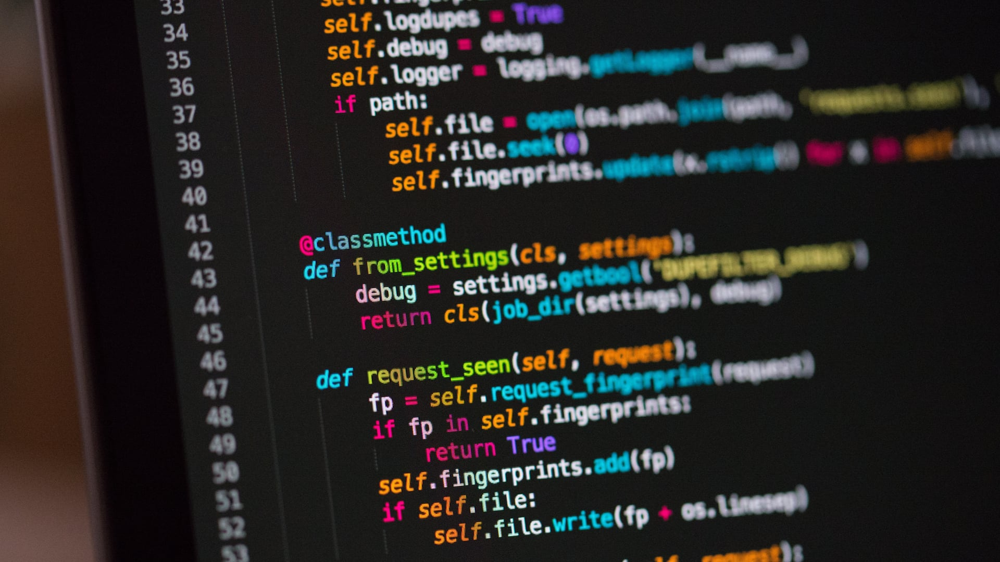

121
Інженерія програмного забезпечення
Спеціальність 121 на освітньо-професійному рівні фахового
молодшого бакалавра призначена для підготовки фахівців у
сфері розробки, супроводу та забезпечення якості програмного
забезпечення. Програма включає в себе вивчення сучасних мов
програмування, базових математичних, інформаційних,
економічних положень, а також методів і технологій
створення програмного забезпечення.